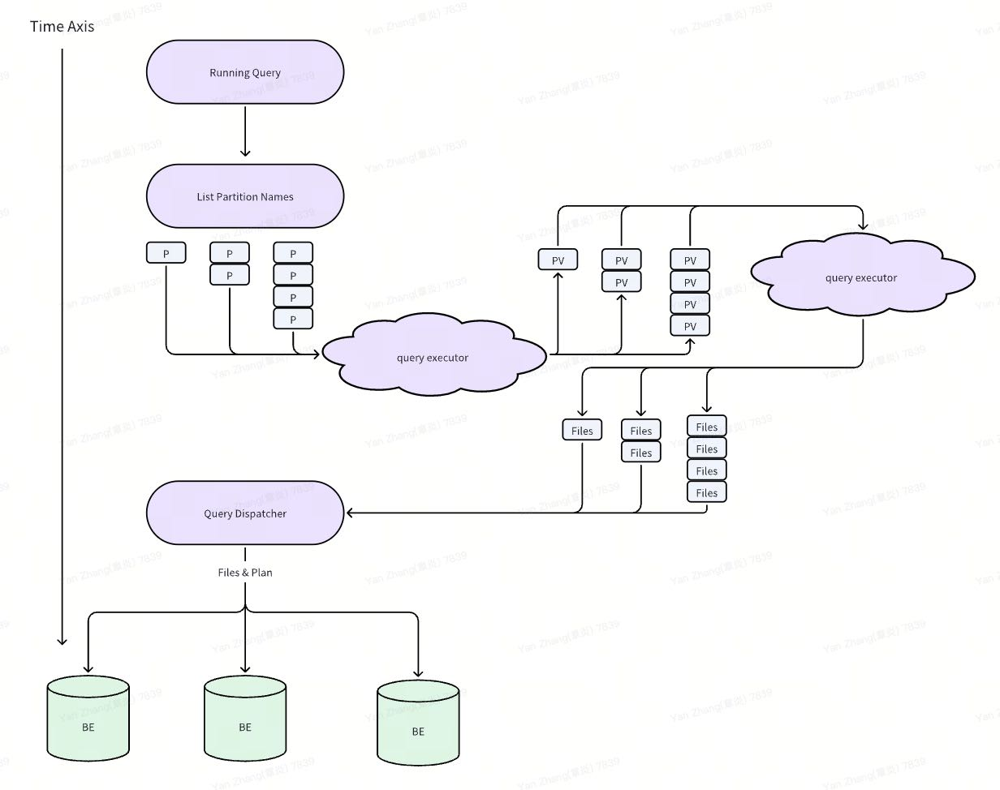
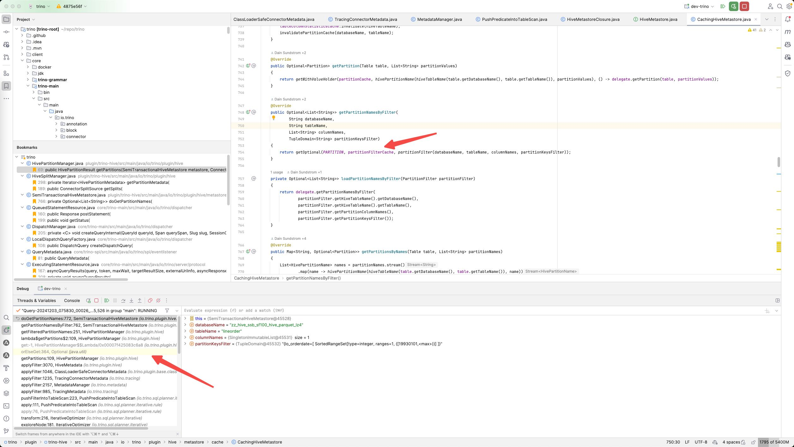
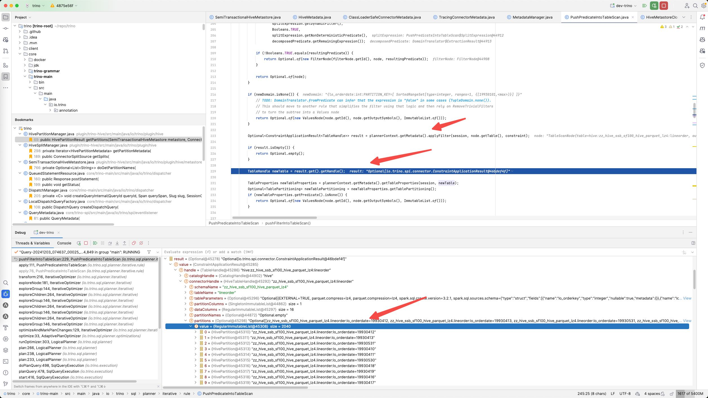
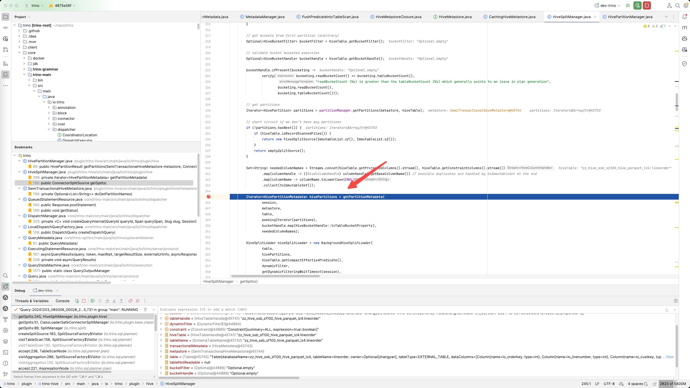

Trino Hive Partitions 加载过程
Table of Contents
1. 总体流程
Hive parttions加载分为两步：
- 同步地去获取partition names.
- 异步/按需根据batch partition names去获取partition values.

2. GetPartitionNames
在Optimizer阶段同步获取到PartitionNames. 并且也是存储在Cache里面，然后塞到table对象中。这个过程是同步执行的。


3. GetPartitionValues

在下面这个函数里面把 HivePartition变成了Partition对象（包装在HivePartitionMetadata里面），里面的过程大致是
- 将parttionNames按照exponent进行拆分获取，最大值是100，并且依然是变为iterator.
- 然后按照batch的方式对parttionNames得到partitionValues, 里面也是有cache来减少调用。
Iterator<HivePartitionMetadata> hivePartitions = getPartitionMetadata(
session,
metastore,
table,
peekingIterator(partitions),
bucketHandle.map(HiveBucketHandle::toTableBucketProperty),
neededColumnNames);
public class HivePartitionMetadata
{
private final Optional<Partition> partition;
private final HivePartition hivePartition;
private final Map<Integer, HiveTypeName> hiveColumnCoercions;
}
Iterator<List<HivePartition>> partitionNameBatches = partitionExponentially(hivePartitions, minPartitionBatchSize, maxPartitionBatchSize);
Iterator<List<HivePartitionMetadata>> partitionBatches = transform(partitionNameBatches, partitionBatch -> {}
最后这个iterator被传入到background hive split loader里面去，所以执行的时候应该是在其他线程池(executor)执行的。这个线程池有1000个线程
private int queryExecutorPoolSize = 1000;
HiveSplitLoader hiveSplitLoader = new BackgroundHiveSplitLoader(
table,
hivePartitions,
hiveTable.getCompactEffectivePredicate(),
dynamicFilter,
getDynamicFilteringWaitTimeout(session),
typeManager,
createBucketSplitInfo(bucketHandle, bucketFilter),
session,
fileSystemFactory,
transactionalMetadata.getDirectoryLister(),
executor,
splitLoaderConcurrency,
recursiveDfsWalkerEnabled,
!hiveTable.getPartitionColumns().isEmpty() && isIgnoreAbsentPartitions(session),
metastore.getValidWriteIds(session, hiveTable)
.map(value -> value.getTableValidWriteIdList(table.getDatabaseName() + "." + table.getTableName())),
hiveTable.getMaxScannedFileSize(),
maxPartitionsPerScan);